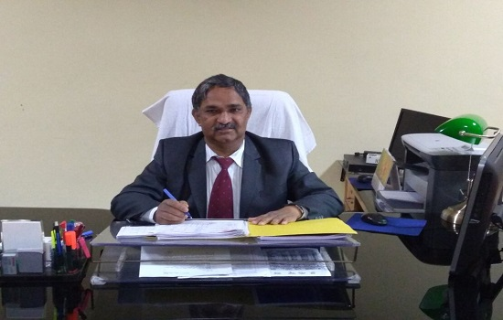

One week workshop on "Developing Critical Thinking using Learning Management System (LMS) and ICT tools" (August 05-09, 2019)
Four weeks summer internship/training on MATLAB AND ITS APPLICATION IN ENGINEERING from June 17 to July 15, 2019
Rajkiya Engineering College (R.E.C.) Ambedkar Nagar was established by Government of Uttar Pradesh under special component plan in year 2010, the college has started offering B.Tech Programme in three disciplines – Information Technology (IT), Electrical Engineering (EE) and Civil Engineering (CE) with intake of 60 seats in each branches from the session 2010-11.
Vision
To attain the global level of excellence in scientific and technical education, fostering research, innovation, leadership qualities and entrepreneurial attitude, contributing to the advancement of the society and mankind.
Mission
1. To enhance knowledge and skills of students in science, technology and human behaviour that will serve the nation.
2. To create an ambience for new idea, research, innovation and entrepreneurial attitude, with a high level of ethics, communication and leadership qualities.
3. To develop ability and passion to work wisely, creatively, and effectively in each member of college for the betterment of the mankind and all living beings.

It gives me immense pleasure to welcome the prospective students to this Institution on behalf of the entire campus community of the Rajkiya Engineering College, AmbedkarNagar. Rajkiya Engineering College (R.E.C) Ambedkar Nagar was established by Government of Uttar Pradesh under special component plan in year 2010.
Education, wealth and strength are necessary for everyone. But the value of each of them depends on the way you use it. Education without character, politics without principles and commerce without morality are not only useless, but positively dangerous. Education is the ornament for human beings. It is the secret wealth. It is to be valued not as means of earning one’s livelihood, but as the essential requisite for a happy, peaceful and progressive life. Engineering offers a highly rewarding and lucrative career – one in which you can apply intuitive, imaginative and creative ideas to find appropriate solutions to the challenges facing our society. I wish you success in sharing knowledge, ideas and solving important societal needs and issues
It will be my sincere endeavor to provide suitable environment- with transparency, impartiality and fairness- to all the students of the Campus so that all can work in responsible and coordinated manner with their full potential to make it possible to fulfill all challenges. I am sure that, working as a team, we would be able to take our organization to the pinnacle of its glory.
On behalf of Rajkiya Engineering College AmbedkarNagar, I wish you all the best in your personal and professional career.
Dr. Akhilesh Kumar Mishra
Director
Rajkiya Engineering College (R.E.C.) Ambedkar Nagar was established by the Government of Uttar Pradesh under special component plan . The work of college construction started in October 2010 with a budget of 6213.81Lakh.The college was running in the campus of Kamla Nehru Institue of Technology, Sultanpur and has been shifted to its own campus at AmbedkarNagar in August 2012. Director of K.N.I.T Sultanpur was the Principal of Rajkiya Engineering College (R.E.C.), Ambedkar Nagaru pto Jan 14, 2015. The college has started offering B.Tech. course in three disciplines- Information Technology, Electrical Engineering and Civil Engineering with intake of 60 seats in each branch from session 2010-2011.The institute is a constituent college of Uttar Pradesh Technical University, Lucknow. Prof K S Verma has joined as regular director ( Founder) of this Institute from Jan 15, 2015.